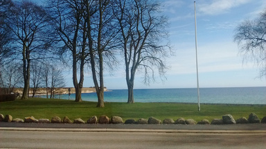

چای شیرینبیان
2016-03-22 19:07

میخواستم از سفارت خرتوخر آمریکا بنویسم و از خودمان که چقدر آمریکایی هستیم. خسته و دست از پا درازتر که برگشتم دانشگاه همان دم در همصحبت شدم با همکار تپل و سیگاریمان. از مادرش گفت که پارکینسون دارد و ویلچرنشین است. از شوهرش که سگ درشتهیکلشان را با دوچرخه میبرد گردش. از پدرش که با هشتاد و اندی سال و قلب عملی، تنهایی مراقب مادرش است. از عشق و محبتی که در رفتار پدرش میبیند و غبطه میخورد. از پدرش گفت که قهرمانش است. در جوانی مدرسهای ساخته برای جوانان بزهکار و کار یادشان داده. گفت کمک کردن و همدلی را از پدرش آموخته. گفت اگر کمک بخواهی همیشه یکی هست. گفتم آدمها خودخواهند. همیشه دست یاری هست، چون آدمهایی مثل پدر تو توی دنیا هستند. به قول مادرم خدا زیادشان کند.
عکس بالا را توی آشپزخانه کوچک کنار دفتر کارم دیدم. چایی با طعم شیرین بیان! مناسب سلیقه مردم اسکاندیناوی. توضیح داده که شیرینبیان یا به قول شیرازیها ریشمک را از پرشیا وارد میکنند. خیلی هم خوب. نوش جانشان.
در لومبو
2016-03-21 21:07

۱- اولین باری که آمدم اینجا -یعنی دانمارک- برای مصاحبه فقط جلد این سرزمین را دیدم. آدمهایی به مراتب خوشلباستر -و نه زیباتر- از هلندیها. شاید میشد از پلهبرقی خیلی باریک خروجی فرودگاه و ورودی متروی کپنهاگ حدسهایی زد از نامرتبتر بودن اینجا در مقایسه با اروپای غربی خاصه هلند و آلمان (بهتر بود مینوشتم آلمان و هلند). ولی متروی بیراننده و قطارهای بزرگ و منظم اینجا چشمهایت را آنقدری خیره میکند که طراحی بد و زشت چهار تا پله را نادیده بگیری. راز خوشحالی دانمارکیها همین است: نادیده گرفتن و چشمپوشی و صبر.
۲- دانمارک بهترین کشور دنیاست اگر شما یک دانمارکی باشید. امکانات عالی و اغلب رایگان برای بچهها و پیرها که هزینهاش از مالیاتهای سنگین تامین میشود. ساده است: تو در دانمارک به دنیا آمدهای و هزینه تحصیل و درمان و کمکهزینههای مختلف زندگیت از جیب مالیاتدهندگان جوان پرداخت شده. حالا که کار میکنی باید جور بچهها را بکشی تا بزرگ شوند و هزینههای دوران کهولتت را بدهند. منطق خوبی است اگر اینجا به دنیا آمده باشی.
۳- ادعای بزرگی است آن هم فقط بعد از سه ماه زندگی در این کشور، ولی به جرئت میگویم هیچ چیز اینجا برای خارجیها طراحی نشده. جزییاتش بماند برای وقتی حال خوشی داشتم.
پیادهروی در دلفت-هیجده آگوست دوهزار و پانزده
2015-08-18 20:14

باران خوشی میآمد. صدای موسیقی این جوانها اما گوشخراش بود. یکی از این آدمکهای بادی هم داشتند. خواستم عکس بگیرم اما کمپرسر خوب کار نمیکرد و آدمک توخالی افتاد. یادم است بچه که بودیم به آدمهای پرمدعا میگفتند «پُرباد». اصطلاح خوب و مناسبی بود. امیدوارم منسوخ نشود.